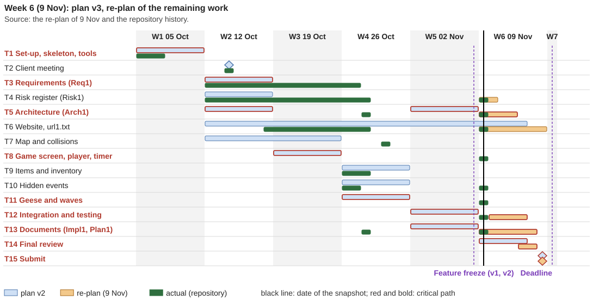

Method Selection and Planning (Plan1)
Team 2 – Goose Patrol
University of York
Team members
Ghalia Al-Raeissi · Ahmet Baykoz · Alex Dyer · Angelina Kan
Aybike Pembecicek · Leo Plaskett · Sean Tavener · Kevin Yu
We used an agile method based on Scrum [1], adapted for eight students who work part time on several modules:
main through a pull request on a feature or document branch; a repository rule blocks direct pushes. Each merge to main rebuilds the website and the game JAR automatically, so there is always a current playable build.Why this method. (1) Requirements changed. The concept agreed at the kick-off (an escape game) changed after the client meeting into a non-violent wave game where geese are fed, and Req1 was only final on 27 October. A plan-driven method that freezes the requirements first would have had to redo its design. (2) A short, fixed timebox. Six weeks with a fixed deadline suit fixed-length iterations with milestones. (3) New technology. Nobody had used libGDX before (risk R3), so we wanted working increments early rather than one big integration at the end. (4) Fixed deliverables. The assessment asks for documents with set contents, so we kept plan-driven milestones for them: a hybrid of agile delivery for the game and dated milestones for the documents.
What we learned. Week 1, with one clear issue per role, went to plan. From week 2 the board was used less: some issues (architecture, risk register, Gantt chart) stayed open while the work was tracked on Discord and in the Arch1 outline instead, and the integration step slipped (Part c). For Assessment 2 we will keep every task on the board and hold a short integration check at the end of each week.
| Tool | Used for | Why we chose it |
|---|---|---|
| GitHub repository, pull requests, “Protect Main” rule | Version control, review of every change, history of who did what | Free private repositories; everyone could learn it quickly; pull requests give a review step and the history is evidence for peer assessment. |
| GitHub Issues and Projects board | Weekly tasks with assignees, To do / Done | Tasks live next to the code and can be linked to pull requests, unlike a separate tool such as Trello. |
| GitHub Actions and Pages | Builds and publishes the website, the PDFs and the game JAR on every merge | No manual release steps, so the website always shows the current build and documents. |
| Discord (channels for general, task planning, updates, discussion, resources) | Day-to-day messages, quick questions, voice calls | Everyone already used it; channels keep topics apart and messages are kept, so decisions can be found later. |
| Microsoft Word on the university Microsoft 365 | Writing document drafts together (e.g. the risk register) | All members have university accounts; several people can edit the same draft. |
| IntelliJ IDEA, JDK 17, Gradle, gdx-liftoff | Writing, building and running the game; generated the starting project | Required stack (Java 17, Gradle, libGDX); IntelliJ has good Gradle support; gdx-liftoff gave a working project on day 2. |
| Tiled | Drawing the campus map | libGDX loads Tiled maps directly, including the collision layer. |
| JUnit 5 | Unit tests and simulated whole games | Runs with Gradle locally and in the website workflow before every deploy, so a failing test stops a broken build reaching the website. |
| Python scripts, Chrome | Diagrams, sprites and sound effects as code; printing the PDFs | Every version is a text file in Git, so diagrams can be rebuilt and compared between versions. |
Roles. At the kick-off meeting (7 October) we split the work into eight roles, each owning a deliverable or a part of the game: team lead and project manager (plan, website, issues and reviews), requirements, architecture, risk and quality, and four developers, one for each package of the game (core engine and user interface, map and movement, items and inventory, geese and hidden events). The kick-off plan set a rule that every member contributes to deliverables worth at least 15 of the 90 marks, so no one is left with a small share, and gave the two roles below that a supporting deliverable.
Sub-teams for the documents. In week 2 each document got a small sub-team rather than one author: requirements (Alex, Ahmet, Aybike and one more), architecture (Angelina, Leo, Sean), risk (Leo, who started the register, with three others), planning (Sean with three others) and the website (Ahmet, Alex). Each risk in Risk1 also has one named owner, spread across all eight members.
Developers own packages. Each developer owns one package and gives the diagrams and CRC cards for it to Arch1, so the architecture matches the code. Because packages only meet through interfaces, a package can be built and tested before the others exist: the items were finished on 26–28 October, before any goose code.
Communication and decisions. Discord for daily messages and questions; team meetings for decisions; meeting notes and the client meeting summary are kept in the repository (docs/meetings); pull requests for every change, so the reason for a change is written down.
Why this organisation. It follows the shape of the assessment, so each deliverable has a clear owner and nothing is forgotten. Owners per package match the component architecture, so people rarely edit the same files. Sub-teams mean a document does not depend on one person. A single coordinator keeps the board and the plan up to date for eight people.
How it changed. From the end of October some owners could not deliver their part in time (risk R6 happened, and R9: quiet periods with few updates). Because the interfaces and the plan were written down, the work could be moved: the game screen, the geese, the final architecture and the remaining documents were taken over on 9 November by a member whose own package was finished. For Assessment 2 we will give each package two people, split tasks into pieces of at most a few days, and check progress against the board at every meeting.
[1] K. Schwaber and J. Sutherland, The Scrum Guide, 2020. [2] Agile Business Consortium, “MoSCoW Prioritisation”, in The DSDM Agile Project Framework, 2014.

main). Critical tasks are red and bold. A snapshot for every week is at https://e26180.github.io/ENG1-GoosePatrol-TeamN/plan.html.| Task | Planned (v2) | Actual or re-planned | Priority | Depends on |
|---|---|---|---|---|
| T1 Set-up, skeleton, tools | 5–11 Oct | 5–7 Oct | Must, CP | – |
| T2 Client meeting | 14 Oct | 14 Oct | Must | T1 |
| T3 Requirements (Req1) | 12–18 Oct | 12–27 Oct | Must, CP | T2 |
| T4 Risk register (Risk1) | 12–18 Oct | 12–28 Oct; 9–10 Nov | Must | T1 |
| T5 Architecture (Arch1) | 12–18 Oct, 2–8 Nov | 28 Oct; 9–12 Nov | Must, CP | T3 |
| T6 Website, url1.txt | 12 Oct–13 Nov | 18 Oct–15 Nov | Must | T1 |
| T7 Map and collisions | 12–25 Oct | 30 Oct | Must | T1 |
| T8 Game screen, player, timer | 19–25 Oct | 9 Nov | Must, CP | T5, T7 |
| T9 Items and inventory | 26 Oct–1 Nov | 26–28 Oct | Must | T5 |
| T10 Hidden events | 26 Oct–1 Nov | 26–27 Oct; 9 Nov | Must | T5 |
| T11 Geese and waves | 26 Oct–1 Nov | 9 Nov | Must, CP | T5, T8, T9 |
| T12 Integration and testing | 2–8 Nov | 9–13 Nov | Must, CP | T8–T11 |
| T13 Documents (Impl1, Plan1) | 2–8 Nov | 9–14 Nov | Must, CP | T12 must finish first |
| T14 Final review | 9–13 Nov | 13–14 Nov | Must, CP | T12, T13 |
| T15 Submit | 15 Nov | 15 Nov | Must, CP | T14 |
CP marks the critical path T1 → T3 → T5 → T8 → T11 → T12 → T13 → T14 → T15: a delay on any of these moves the end date. The documents (T13) are drafted alongside testing but can only be finished after it, because they report its results. T4, T6, T7, T9 and T10 had float.
| Version | What changed | Why |
|---|---|---|
| v1, 7 Oct (week 1) | Weekly milestones: set-up; requirements, first diagrams and risk register in week 2; build in weeks 3–4; feature freeze 8 Nov; final review in week 6. | First plan, before we knew the client’s needs. |
| v2, 12 Oct (week 2) | Week 2 split into issues for sub-teams; the client meeting added; requirements start after week 1. | Sub-teams give each document more than one author; the requirements needed the client meeting first. |
| Weeks 3–5 | No change to the plan. The requirements and architecture ran 9–10 days late; the items were early; the map, game screen and geese did not arrive. | Progress was not checked against the board after week 2 (risks R2, R9). |
| v3, 9 Nov (week 6) | The late tasks were taken over and finished; testing 10–13 Nov (Windows, Linux, real players); documents finished after testing; final review 13–14 Nov; submission a day early on 15 Nov. | The critical path slipped by about a week (R2, R6, R9). The re-plan keeps a day of slack before the deadline. |
The six weekly snapshots on the website were drawn on 9–10 November from the kick-off notes, the GitHub issues and the repository history, because we did not save a chart every week; weeks 3–5 are marked as reconstructed.